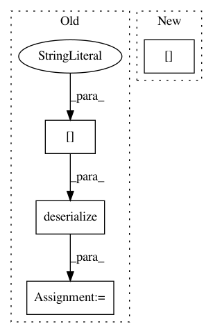

a261454d865fb25e8f27ff11fbfa591aa5dfe64d,python/tvm/auto_scheduler/measure.py,MeasureInput,deserialize,#Any#,140
Before Change
deserialize = tvm.get_global_func("auto_scheduler.DeserializeMeasureInput", True)
assert deserialize
tvm.auto_scheduler.workload_registry.WORKLOAD_FUNC_REGISTRY[state["name"]] = state["func"]
x = deserialize(state["measureinput"])
return recover_measure_input(x)
@tvm._ffi.register_object("auto_scheduler.BuildResult")
After Change
@staticmethod
def deserialize(data):
inp = _ffi_api.DeserializeMeasureInput(data[0])
deserialize_workload_registry_entry(data[1])
return recover_measure_input(inp)
In pattern: SUPERPATTERN
Frequency: 3
Non-data size: 4
Instances
Project Name: apache/incubator-tvm
Commit Name: a261454d865fb25e8f27ff11fbfa591aa5dfe64d
Time: 2020-10-30
Author: lianminzheng@gmail.com
File Name: python/tvm/auto_scheduler/measure.py
Class Name: MeasureInput
Method Name: deserialize
Project Name: keras-team/autokeras
Commit Name: e709576eb39ac3ddb1f59d291178b7364bdf068e
Time: 2020-10-30
Author: abraham.g.sebastian@gmail.com
File Name: autokeras/preprocessors/common.py
Class Name: CategoricalToNumerical
Method Name: from_config